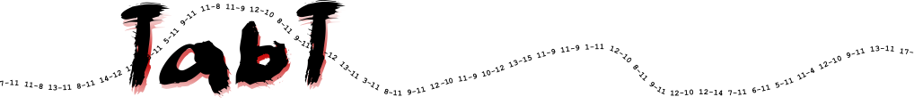

The main TabT objective is to
Provide a complete and powerful software suite to access and manage results of matches, tournaments and competitions of individual sports.
The whole concept and all the tools created by this project will be available to everyone under a free GPL license.
Getting started
To learn about TabT, a demo website is available at https://tabt-dev.vttl.be/. It runs a demonstration database with anonymized resultats of some past seasons. This database will also be used to illustrate this documentation.
Main TabT concepts
TabT is defining the following main concepts:
-
Member: a member is a single person
-
Club: a club is an organisation grouping several members
-
Team: a team is a group of members playing together against another team
-
Match: a match is an event where two teams play against each other
-
Division: a division is a group of teams playing a list of matches
-
Calendar: a calendar is the list of matches to be played within a division
-
Game: a game is an event where two individual members play against each other
-
Tournament: a tournament is an event where games between members are organised per categories